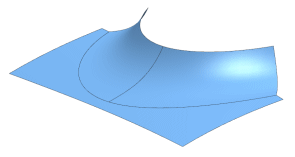
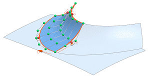
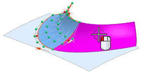

Specify faces and choose an edit method
-
Open des19_85_x-form_enhancements.

-
Choose Edit→Surface→X-form.
X-Form
 is also available on the Edit Surface toolbar.
is also available on the Edit Surface toolbar.
-
In the X-form dialog box, clear the Single Select
 check box.
check box.
-
Select the two curved faces as shown.




-
In the Method group, on the Move tab, click Normal.